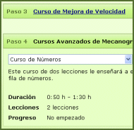

Curso de Mejora de la Velocidad (6 lecciones)
Céntrese en mejorar su velocidad escribiendo palabras comunes y textos más largos.
Curso de Números (2 lecciones)
Aprenda a teclear los números con la técnica de mecanografía al tacto.
Curso de Signos Especiales (4 lecciones)
Aprenda a usar los signos especiales con la técnica de mecanografía al tacto.
Curso de Teclado Numérico (3 lecciones)
Aprenda a utilizar el teclado de 10 teclas con la técnica de mecanografía al tacto.
Puede comenzar cualquiera de estos curso tras salir de éste.